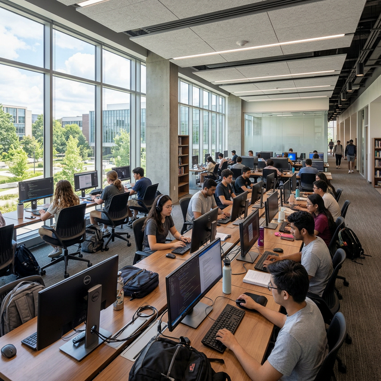

Profil Jurusan
Kompetensi standar dalam membentuk lulusan Informatika yang berdaya saing global.
Sikap
6 Kompetensi Inti
Pengetahuan
6 Kompetensi Inti
Keterampilan Umum
6 Kompetensi Inti
Keterampilan Khusus
6 Kompetensi Inti
Bertakwa kepada Tuhan Yang Maha Esa dan mampu menunjukkan sikap religius.
Menjunjung tinggi nilai kemanusiaan dalam menjalankan tugas berdasarkan agama, moral, dan etika profesi teknologi informasi.
Berkontribusi dalam peningkatan mutu kehidupan bermasyarakat, berbangsa, bernegara, dan kemajuan peradaban berdasarkan Pancasila.
Berperan sebagai warga negara yang bangga dan cinta tanah air, memiliki nasionalisme dan rasa tanggung jawab pada negara dan bangsa.
Menghargai keanekaragaman budaya, pandangan, agama, dan kepercayaan, serta pendapat atau temuan orisinal orang lain.
Menginternalisasi nilai, norma, dan etika akademik serta etika dalam pemakaian teknologi informasi.
Menguasai konsep dasar ilmu komputer, algoritma, dan matematika diskrit sebagai fondasi berpikir komputasional.
Menguasai prinsip-prinsip rekayasa perangkat lunak, termasuk desain sistem, pengujian, dan pemeliharaan aplikasi skala besar.
Memahami konsep kecerdasan buatan, machine learning, dan data science dalam konteks pengembangan solusi cerdas.
Menguasai konsep jaringan komputer, sistem terdistribusi, dan keamanan informasi dalam lingkungan digital.
Memahami manajemen proyek teknologi informasi, metodologi Agile/Scrum, dan praktik DevOps dalam pengembangan perangkat lunak modern.
Memahami aspek hukum, regulasi, dan kebijakan terkait teknologi informasi, termasuk hak kekayaan intelektual dan perlindungan data.